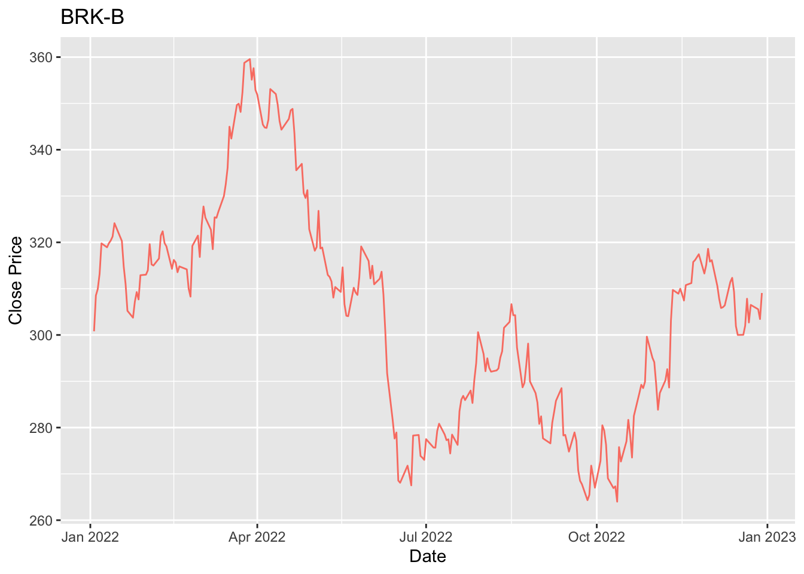
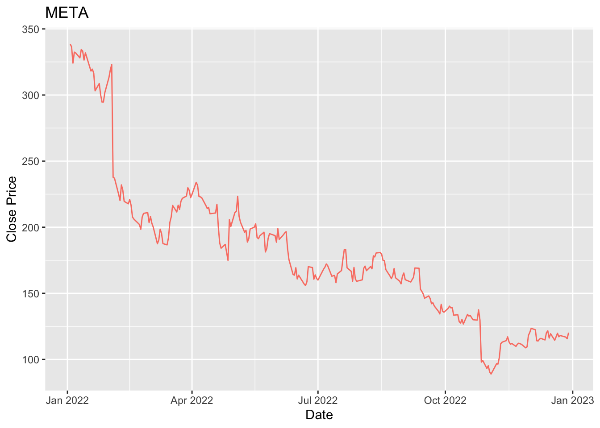
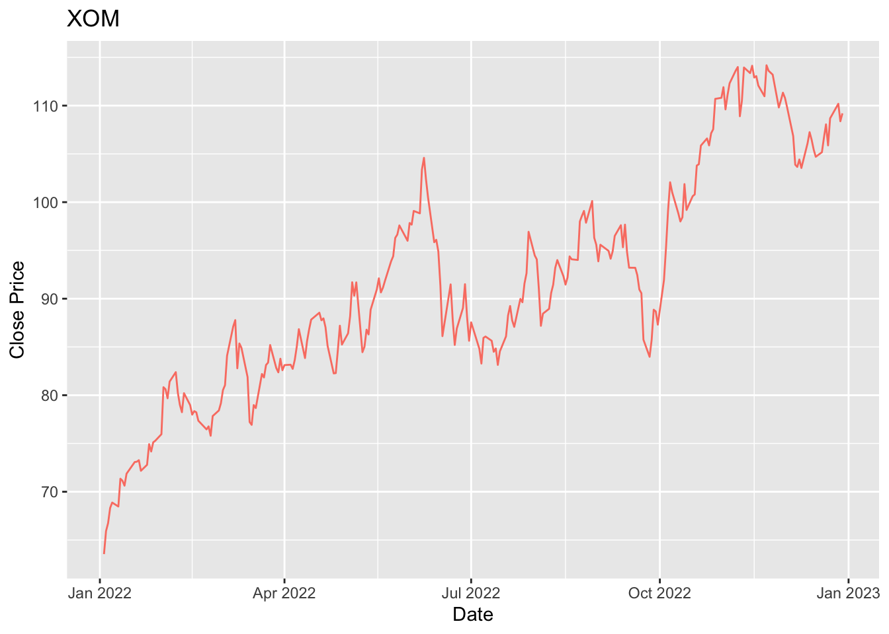

3 Importación de los datos
Para cada uno de los índices indicados en el Top 10, se construye una función que extraerá los datos dentro de los tiempos definidos, tanto para entrenamiento como para pruebas y graficará la serie de tiempo; así:
stock <- function(symbol){
#Import data:
data_train = quantmod::getSymbols(symbol, from = '2022-01-01', to = "2022-12-30", src='yahoo', warnings = FALSE, auto.assign = FALSE)
data_test = quantmod::getSymbols(symbol, from = '2023-01-01', to = "2023-04-30", src='yahoo', warnings = FALSE, auto.assign = FALSE)
#Change default column names:
colnames(data_train) = c('Open', 'High', 'Low', 'Close', 'Volume', 'Adjusted')
colnames(data_test) = c('Open', 'High', 'Low', 'Close', 'Volume', 'Adjusted')
return(list('train'=data_train, 'test'=data_test))
}Ahora, se realizará la consulta para índice ‘APPL’ donde visualizaremos su comportamiento en el tiempo definido en el etapa de entrenamiento:
ts_aapl = stock('AAPL')
ggplot() + labs(title = 'AAPL', x = 'Date', y = 'Close Price') +
geom_line(data = ts_aapl$train, aes(x = index(ts_aapl$train), y = ts_aapl$train$Close), color = 'salmon')
Podemos observar cómo el precio ha caído a lo largo del 2022, con una baja macada alrededor del mes de Junio. Se realiza el mismo ejercicio para el índice ‘MSFT’:
ts_msft = stock('MSFT')
ggplot() + labs(title = 'MSFT', x = 'Date', y = 'Close Price') +
geom_line(data = ts_msft$train, aes(x = index(ts_msft$train), y = ts_msft$train$Close), color = 'salmon')Para este caso se evidencia la misma tendencia hacia la baja durante el año 2022, con la excepción que no muestra ninguna caída pronunciada en el mes de Junio. Se realiza el mismo ejercicio para el índice ‘AMZN’:
ts_amzn = stock('AMZN')
ggplot() + labs(title = 'AMZN', x = 'Date', y = 'Close Price') +
geom_line(data = ts_amzn$train, aes(x = index(ts_amzn$train), y = ts_amzn$train$Close), color = 'salmon')El índice ‘AMZN’ presenta el mismo comportamiento a la baja durante todo el año, esto puede estar asociado a los impactos causados por la pandemia del SARS-CoV-2. Ahora, se analiza el índice ‘NVDA’:
ts_nvda = stock('NVDA')
ggplot() + labs(title = 'NVDA', x = 'Date', y = 'Close Price') +
geom_line(data = ts_nvda$train, aes(x = index(ts_nvda$train), y = ts_nvda$train$Close), color = 'salmon')Para los últimos tres índices explorados se identifica cierto crecimiento temporal durante el mes de Junio. Se realiza en análisis del índice ‘GOOGL’:
ts_googl = stock('GOOGL')
ggplot() + labs(title = 'GOOGL', x = 'Date', y = 'Close Price') +
geom_line(data = ts_googl$train, aes(x = index(ts_googl$train), y = ts_googl$train$Close), color = 'salmon')
Aunque en general la tendencia del precio de la acción para ‘GOOGL’ es a la baja, se evendician oscilaciones de este durante todo el transcurso del año. Se continúa con la exploración del índice ‘BRK.B’:
ts_brkb = stock('BRK-B')
ggplot() + labs(title = 'BRK-B', x = 'Date', y = 'Close Price') +
geom_line(data = ts_brkb$train, aes(x = index(ts_brkb$train), y = ts_brkb$train$Close), color = 'salmon')
El índice ‘BRK-B’ presenta oscilaciones positivas durante al año, sin embargo cierra con un precio menor; a diferencia de los anteriores índices, ese indicaría una mayor estabilidad en su precio en bolsa. Ahora, se realiza el análsis del índice ‘GOOG’:
ts_goog = stock('GOOG')
ggplot() + labs(title = 'GOOG', x = 'Date', y = 'Close Price') +
geom_line(data = ts_goog$train, aes(x = index(ts_goog$train), y = ts_goog$train$Close), color = 'salmon')El índice de Alphabet Inc C, al igual que los primeros presentados muestra tendencia a la baja durante todo el periodo del 2022, cerrando con una caída de alrededor del 40%. Continúa el análisis para el índice ‘META’:
ts_meta = stock('META')
ggplot() + labs(title = 'META', x = 'Date', y = 'Close Price') +
geom_line(data = ts_meta$train, aes(x = index(ts_meta$train), y = ts_meta$train$Close), color = 'salmon')
De acuerdo con la gráfica se puede identificar uan caída pronunciada alrededor del mes de febrero, un comportamiento diferente a los ya ilustrados anteriormente. A continuación se presenta la serie de tiempo para el índice ‘XOM’:
ts_xom = stock('XOM')
ggplot() + labs(title = 'XOM', x = 'Date', y = 'Close Price') +
geom_line(data = ts_xom$train, aes(x = index(ts_xom$train), y = ts_xom$train$Close), color = 'salmon')
El índice ‘XOM’ aunque inicia el año 2022 con un precio muy bajo, durante todo el 2022 aumenta progresivamente el precio de su acción, aumentando casi el 100% de su precio inicial. Finalmente se presenta la serie del índice de Unitedhealth Group Inc:
ts_unh = stock('UNH')
ggplot() + labs(title = 'UNH', x = 'Date', y = 'Close Price') +
geom_line(data = ts_unh$train, aes(x = index(ts_unh$train), y = ts_unh$train$Close), color = 'salmon')El índice ‘UHN’ evidencia fluctuaciones prositivas y negativas durante el año, inclusive, a medidados de año presenta una fuerte caída pero cierra el año con números positivos.